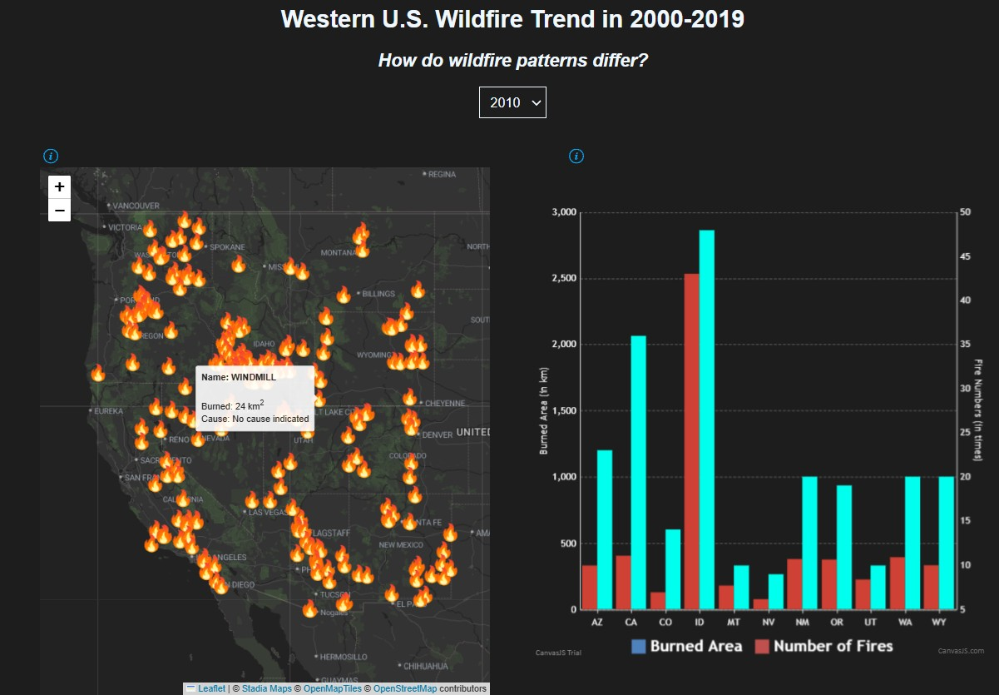
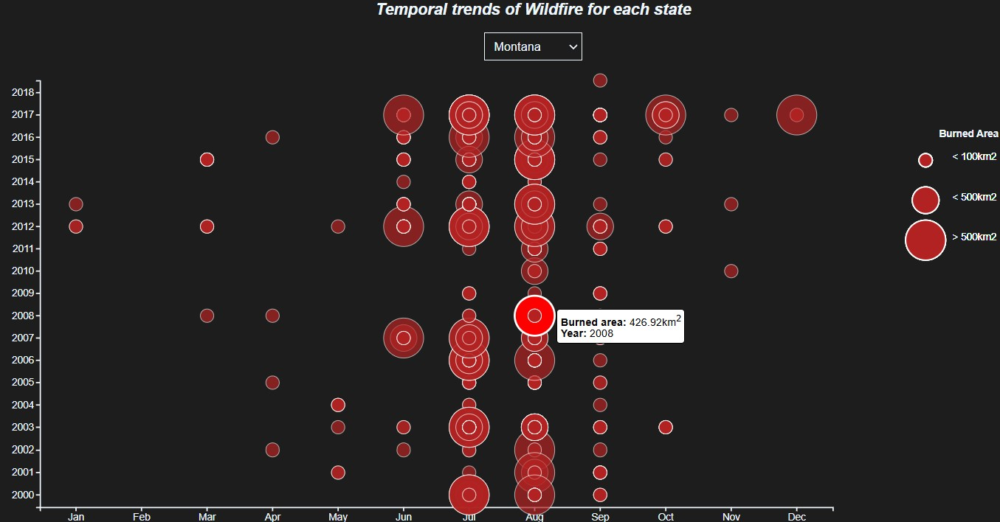
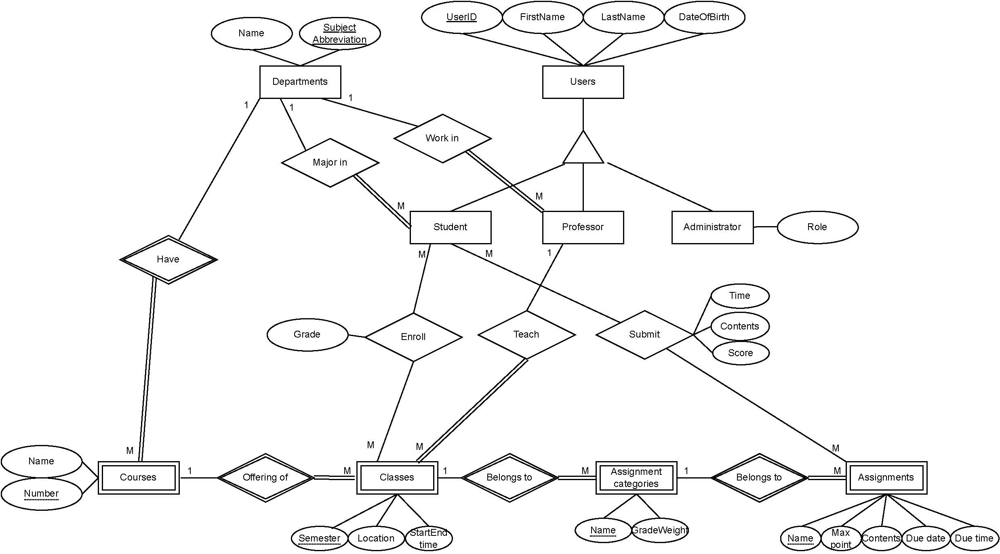

02 / 캡스톤 프로젝트
미국 서부 산불의 공간적 분포 및 패턴 분석을 위해 인터렉티브한 웹 매핑 툴 건설
산불이 미국의 사회경제와 공중보건에 미치는 막대한 위협을 고려하여, 2000년부터 2019년까지 미국 서부의
산불 위치를 시각화했습니다. 산불 발생 시점과 소실 면적의 상대적 위치를 파악하고, 미국 서부 주들의 산불 발생 빈도와
소실 면적을 요약하여 미래 산불 예측 및 대비에 중요한 산불 발생의 내재적 패턴을 탐색했습니다.
- 프로그래밍 언어JavaScript, HTML, CSS


프로젝트 스크린캐스트: https://youtu.be/6z4KwQSF7qQ?si=ZIO0vTNfjep2bET2
주요 업무
다년간의 과거 산불 레이어를 실시간으로 전환할 수 있는 인터랙티브 GIS 웹 매핑 애플리케이션을 설계·배포했습니다.
원시 공간 점 관측치를 맞춤형 인터랙티브 툴팁(추정 발화 원인 및 공간적 범위)을 갖춘 동적 소실 경계 폴리곤으로 변환했습니다.
연도 내 월별 소실 주기와 다년간 산불 빈도 추세를 분석하기 위해 인터랙티브 산점도와 시계열 시각화를 구축했습니다.
핵심 결과
산불의 공간적 분포는 불균등합니다. 2000년부터 2018년까지 아이다호와 캘리포니아는 미국 산불 발생의 큰 비중을
지속적으로 차지하여 이러한 재난에 대한 취약성을 보여주었습니다. 소실 면적 측면에서는 캘리포니아가 대규모 산불의
영향을 가장 크게 받았습니다. 이러한 추세는 각 주의 지리적·기후적 조건에 맞춘 산불 예측 시스템과 재난 관리의 필요성을 보여줍니다.
도시 녹지 접근성을 기반으로 한 대중교통 네트워크 최적화: 유타주 솔트레이크시티 사례연구
도시 녹지는 공중보건에 필수적인 혜택을 제공하지만, 생태적·경제적 분포는 불평등합니다. 새로 조성되거나 복원된 녹지 편의시설은 국지적인 부동산 가치 상승을 유발하여 저소득 및 취약계층의 이주 위험을 높일 수 있습니다. 주로 사회적 혜택이 필요한 인구집단은 대중교통에 크게 의존하기 때문에, 도시 공원에 용이하게 접근할 수 있는 대중교통체계를 설계하는 것은 중요합니다. Greedy 알고리즘을 적용하여 솔트레이크시티 기존 버스 노선을 최적화하고, 근접 중심성, 매개 중심성, 모듈성 점수를 기준으로 기존 노선과 개선 노선을 비교했습니다.
- 프로그래밍 언어MATLAB, Python
주요 업무
Chen과 Chang(2015)의 접근법을 바탕으로, 출발·도착 노드를 고정한 채 공원 접근성의 형평성을 높이도록 선정된 버스
교통 회랑을 재구성하는 greedy 경로 알고리즘을 개발했습니다. 근접 중심성, 매개 중심성, 그래프 모듈성을 결합한
델타 점수를 계산하여 구조적 효율성을 극대화하고 네트워크 위상을 평가했습니다. 공간 접근성 규칙을 알고리즘에 통합하여,
각 버스 노드가 가장 가까운 공원으로부터 보행 가능 거리(약 402m) 안에 위치하도록 하고, 최종 노드가 목적지에 수렴할 때까지
알고리즘이 반복적으로 가장 효율성이 있는 선택을 내릴 수 있도록 설계하였습니다.

핵심 결과
근접 중심성은 한 정점에서 다른 정점까지의 거리를 측정하여, 해당 정점이 네트워크에서 얼마나 중심적인지를 나타냅니다.
공원 인접 노드의 근접 중심성이 높으면 녹지로의 접근 경로가 더 쉬울 가능성이 큽니다. 개선된 버스 네트워크의 평균 근접 중심성은
기존 네트워크보다 37.5% 높았습니다. 한편 매개 중심성은 다른 정점 사이를 지나는 흐름에 대한 정점의 영향력을
나타냅니다. 공원 인접 버스 노드의 매개 중심성 점수가 높으면 다른 버스 노드를 연결하여 녹지 접근에 기여할 가능성이 큽니다.
평균 매개 중심성은 기존 네트워크에서 약간 더 높았습니다. 모듈성 점수는 주로 공원까지 보행 가능한 거리 내에 있는 접근점(노드)의
분포에 기반합니다. 개선된 버스 네트워크의 모듈성 점수는 기존 네트워크보다 10% 높았습니다.
이는 개선된 네트워크 구조가 녹지에 대한 더 나은 접근성과 연결성을 제공함을 보여줍니다. 버스 네트워크 구축에 중요한 외부 요인 등
몇 가지 한계에도 불구하고, 이 프로젝트는 대중교통 네트워크가 형평성 있는 도시 녹화 사업을 촉진하는 한 방법이 될 수 있음을 시사합니다.
모델-뷰-컨트롤러 아키텍처 기반 Canvas형 학습관리시스템(LMS) 설계
이 캡스톤 프로젝트에서는 Canvas형 학습관리시스템(LMS)을 위한 서버 측 인프라와 관계형 데이터베이스를 설계했습니다. 모델-뷰-컨트롤러(MVC) 설계 패턴 안에서 모델과 컨트롤러에 집중하여, 백엔드 (back-end) 로직과 데이터베이스 작업을 사용자 인터페이스에서 분리했습니다. C#과 MySQL을 사용해 사용자 요청을 최적화되고 안전한 데이터베이스 쿼리로 동적으로 변환하여, 사용자 등록·과제·제출물·성적 추적 등 복잡한 학사 업무 흐름을 관리했습니다.
- 프로그래밍 언어SQL, C#, JavaScript
기본키·외래키 관계, 제약조건 적용, 인덱스 최적화 등 요구사항을 충족하도록 MySQL 관계형 데이터베이스를 설계했습니다. MVC 아키텍처에서 웹 애플리케이션의 백엔드 로직을 개발하여, 사용자 입력에 기반한 SQL 쿼리를 프로그래밍 방식으로 실행·관리하고 데이터 무결성과 SQL 인젝션 취약점 방지를 보장했습니다.
참고: 수업 정책에 따라 GitHub 링크는 제공하지 않았습니다.
